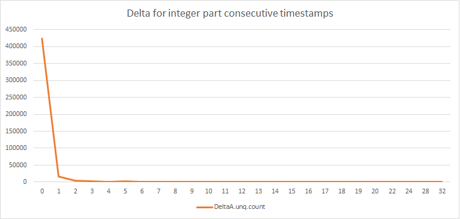
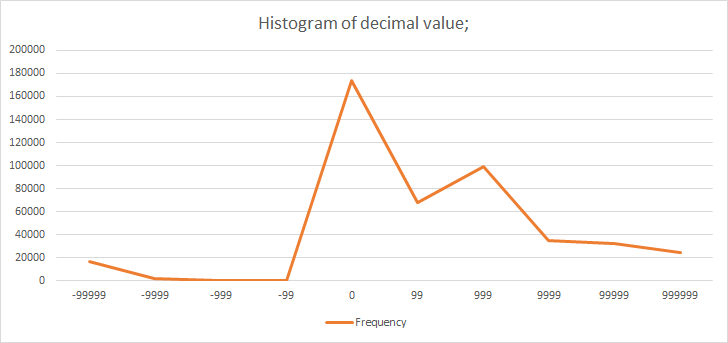

Compress sequence of UNIX timestamps with microseconds accuracy to ~10bits/timestamp
Problem Setup
There is a stream of timestamps that need to be transferred across some network stream. The goal is to compress this sequence of timestamps with microseconds accuracy, in lossless fashion. Also the encoding and decoding process should be very fast so that it can scale for time critical processes;
Some assumptions
- The data to be transmitted consists of a sequence of real time unix timestamps with microsecond accuracy.
- Timestamps are always increasing.
- In this dataset timestamps belong to 24 hour range (however this shouldn’t affect the algorithm).
- Consider it a stream of timestamps, so classical compression algorithms might not work. The alogrithm should be able to start and stop at any index of timestamp.
Expected Flow
timestamps -> ENCODER -> encoded_timestamps -> DECODER -> decoded_timestamps
IF timestamps == decoded_timestamps: SUCCESS
ELSE: FAIL
Solution
So a single timestamp looks like 1364281200.078739 with micro seconds accuracy. The input file it is stored in, is in raw format and it’s treated as charecters so every timestamp along with newline charecter will take:
18 charecters = 18 bytes = 144 bits
Total no of timestamps in file = 451210 = 7.74MB = 8121779 bytes
Attempt 01
The data need not be stored as raw text, if we simply remove the dot and newline charecter itself, it reduces the data to 16 bytes/timestamp i.e. 128 bits/timestamp.
Now each timestamp in here can be stored in 7 bytes (either store it as a single value, removing dot or consider both of them separate – A.B, such that A part need 4 bytes (32 bits) & B part needs 3 bytes (max value possible is 999999 – it can be stored in 20 bits, but reserving space for now, will optimize later)). So with this we can reduce the data to 7Bytes = 56bits/timestamp if stored in binary format.
However, in the first approach itself I’d like to take advantage of the fact that these are increasing timestamps. So rather than storing the whole value we can store the delta. So I will store the first value as is: 7Bytes. From the 2nd timestamp I’ll store them as delta with previous value.
Here’s some analysis before I do the math for the given dataset: the distribution of delta of the integer part:
| DeltaValue | Frequency |
|---|---|
| 0 | 423898 |
| 1 | 17439 |
| 2 | 4215 |
| 3 | 1892 |
| 4 | 1092 |
| 5 | 2348 |
| 6 | 105 |
| 7 | 68 |
| 8 | 50 |
| 9 | 29 |
| 10 | 22 |
| 11 | 19 |
| 12 | 5 |
| 13 | 7 |
| 14 | 3 |
| 15 | 4 |
| 16 | 3 |
| 17 | 1 |
| 18 | 2 |
| 19 | 1 |
| 20 | 2 |
| 22 | 1 |
| 24 | 1 |
| 28 | 1 |
| 32 | 2 |

Figure: Distribution of delta values
So majorly (> 50%) is 0 delta or 1 delta. Since the smallest size of data that can be written to a file is 1 byte, we shall encode data in byte by byte format. We’d want to store delta values with high distribution in smaller size chunks to reduce size. So I’ll encode them with bit prefixes something like this:
00 000000 - indicates zero delta.
01 000000 - indicates '1' delta
10 xxxxxx xxxxxxxx xxxxxxxx - indicates delta between [2,32], will have to read next 22 bits to encode information about the delta value.
11 xxxxxxxx xxxxxxxx xxxxxxxx xxxxxxxx - indicates possible delta value 4bytes will be read.
For now Will plainly encode the decimal value (with 999999 as maxvalue) in 20 bits after the int value. We will need one more bit to store negative value. So total 21 bits for decimal value. This way size requirements shall be:
4Byte + 3Byte + (21bits * 452109) + (2*423898 + 2*17439 + 8*9873) = 10456003 bits
Which gives us
= 23.127 bits/timestamp
I’ll implement this as first version and try to achieve this theoretical number.
SUMMARY of implementation
As mentioned before, without buffering values in memory, we can only write byte by byte to file. Hence, for first two cases (00 & 01) 1 byte is used and for case 3 (10) – 4 bytes are used and for case 4 (not found in testfile) – 7 bytes are supposed to be used.
After running the code, it reduced the file to 1345 Kb = 1377280 bytes which is equal to 24.419Bits / timestamp. So this satisfies the minimum criteria but it is pretty far away from 10bits/timestamp.
Ok, compression ratio is not awesome, but C++, IO & Bits manipulation skills are now brushed up. Will try a better approach now.
SO FAR: 23.127 bits / timestamp :)
Attempt 2
Looking at the integer value and decimal value is adding overheads. I’d rather look at the number on the whole. Quickly calculated the delta values between consecutive numbers using simple python script ` = helper.py`. Using Microsoft Excel - here’s the histogram based on no of bits needed to store the delta values:
| bits needed | bin | frequency | Percentage |
|---|---|---|---|
| 1 | 1 | 235916 | 52.28530459 |
| 2 | 2 | 357 | 0.079120762 |
| 3 | 4 | 58 | 0.012854354 |
| 4 | 8 | 24 | 0.005319043 |
| 5 | 16 | 24 | 0.005319043 |
| 6 | 32 | 17 | 0.003767655 |
| 7 | 64 | 78 | 0.017286889 |
| 8 | 128 | 9073 | 2.01081982 |
| 9 | 256 | 35824 | 7.939557943 |
| 10 | 512 | 35823 | 7.939336316 |
| 11 | 1024 | 23095 | 5.118470598 |
| 12 | 2048 | 11143 | 2.469587264 |
| 13 | 4096 | 9505 | 2.106562591 |
| 14 | 8192 | 9338 | 2.06955091 |
| 15 | 16384 | 10605 | 2.350352054 |
| 16 | 32768 | 10017 | 2.220035505 |
| 17 | 65536 | 9048 | 2.00527915 |
| 18 | 131072 | 9690 | 2.147563546 |
| 19 | 262144 | 9818 | 2.175931774 |
| 20 | 524288 | 9622 | 2.132492925 |
| 21 | 1048576 | 8796 | 1.9494292 |
| 22 | 2097152 | 6608 | 1.464509795 |
| 23 | 4194304 | 3819 | 0.846392692 |
| 24 | 8388608 | 2806 | 0.621884759 |
| 25 | 16777216 | 95 | 0.021054545 |
| 26 | 33554432 | 10 | 0.002216268 |
| 27 | 67108864 | 0 | 0 |
| 28 | 134217728 | 0 | 0 |
| 29 | 268435456 | 0 | 0 |
| 30 | 536870912 | 0 | 0 |
| 31 | 1073741824 | 0 | 0 |

Figure: Distribution of decimal values
So greater than 50% of delta values are between [0,1]. And a good portion of them lie between [2, 14] bits needed. So if we encode it as following:
Summaries Count BITS Storage pattern
[0,1] 235916 2 00 000000 = 0 & 01 000000 = 1
[2, 14] 125021 16 10 xxxxxx xxxxxxxx
REST 90272 32 11 xxxxxx xxxxxxxx xxxxxxxx xxxxxxxx
This way total no of bits needed will be: 64 + 8 * 235916 + 16 * 125021 + 32 * 90272 = 6776432 i.e. 15.0183 bits / timestamp.
Now we are wasting around 75% space when storing 0 or 1, as only two bits are needed to encode them. Will try to encode more information in these regions in coming attempts.
The result after experimentation are - sample dataset reduced to
807168 bytes = 14.311 bits / timestamp
As a minor optimisation, I have changed code to store [15, 22] bit delta values in 3 bytes. After this size of encoded file is:
739750 bytes = 13.1158 bits / Timestamp
SO FAR: 13.115 bits / timestamp
Attempt 03
Untill now the algorithm was purely looking at information that came so far. To compress further I’m going to have look ahead logic now. There were a lot of cases where large delta’s were followed by single 0 or 1. So shall reserve the two bits at the end of bigger models => (2, 3 & 4 byte models) with following information:
01 - if followed by a 0
10 - if followed by a 1
So everytime we observe a large delta, rather than writing to file immediately we’ll buffer the data and write if next timestamp match the condition (delta being 0 or 1). By just encoding next one or zero in previous set of information, was able to reduce the encoded data to:
600125 bytes = 10.64 bits / timestamp
After this added one more level of buffering to encode sequence of two zeros (two consequtive zeros) as 11. That brought encoded file size down to
584352 bytes = 10.36 bits / timestamp
SO FAR: 10.36 bits / timestamp
Attempt 04
In case of one byte model where we encode 0 or 1 (without any buffering) as 00000000 and 00100000 respectively, the last 5 bits do not contain any information and are free and it can be used to store 32 unique sequences of 0 & 1.
Now if the sequence of delta is like 0 0 0 1 0 1 0, we can use the remaining bits in 1 byte model to encode them. I tried doing this - ffter a 0 or 1 if next delta is 0 or 1 I’d encode 10 or 01 in free bit space in 1 byte model. With this I got an encoded file of:
569463 bytes = 10.097 bits / timestamp
If we build a mapping of sequences based on popularity and encode them in these bits when observed we’d be able to reduce the data further.
TODO(mebjas): Find the most popular sequence and encode them in free bits.
SO FINALLY: 10.097 bits/timestamp
Also, this one is not the part of solution I implemented but if we zip the encoded file it’s further reduced to
527355 bytes = 9.35 bits / timestamp
Which is: 93.50 % Lossless compression
Appendix
Source Code
Find the source code here: mebjas/timestamp_compression
How to build and test
The code is written as a VC++ project. You might need Visual Studio (Windows) to compile & test. It has some dependency on Windows (I have used windows.h header for some profiling tasks, but that can be removed). If you face troube compiling this project, check this out - How to compile windows visual C++ code on linux
In windows, open VSProject\TC.sln, build the solution and run. the dataset file is included in the solution (& copied to output path during build. the output file is generated in VSProject\TC\). An executable is generated at VSProject\Debug\TC.exe after the build is complete.
You can run against the binary I built in my system, it’s there in root folder of the zip: TC.exe
# encoding
TC.exe -e timestamps.txt timestamps_encoded.txt
# decoding
TC.exe -d timestamps_encoded.txt timestamps_decoded.txt
# validation (using FC utility, alternative to diff in linux)
FC timestamps.txt timestamps_decoded.txt
There is test.cmd to try this out. Here’s sample output I got:
$ TC.exe -e timestamps.txt timestamps_encoded.txt
Begin Encoding
Encoding done; Processed: 451210 rows
Time taken (in micro seconds) : 9798.17
Avg Time taken (in micro seconds) : 0.0217153
$ TC.exe -d timestamps_encoded.txt timestamps_decoded.txt
Begin Decoding
Decoding done; Processed: 451210 rows
Time taken (in micro seconds) : 8218.85
Avg Time taken (in micro seconds) : 0.0182151
$ FC timestamps.txt timestamps_decoded.txt
Comparing files timestamps.txt and TIMESTAMPS_DECODED.TXT
FC: no differences encountered
How to validate
In windows:
cd VSProject\TC\
FC timestamps.txt timestamps_decoded.txt\
Output I got:
Comparing files timestamps.txt and TIMESTAMPS_DECODED.TXT
FC: no differences encountered
Metrics (also available in .\metrics.txt)
Degree of compression
In the final attemp was able to reduce the data to: 569463 bytes = 10.097 bits / timestamp which is equivalent to 92.98% lossless compression
Time taken: (Encoding)
Encoding: 9798.17ms (total) => 0.0217153ms / timestamp
Time taken: (Decoding)
Decoding: 8218.85ms (total) => 0.0182151 / timestamp
Ideas to further improve the model
1 byte model has 5 (can even use 6) empty bits, can use that to represent 63 different sequences.
Summary:
- This was a very goof fun exercise to refresh VC++ skills, IO skills & Bits Manipulation skills.
- Also a good reminder of how many things we just take for granted when working on high level languages.